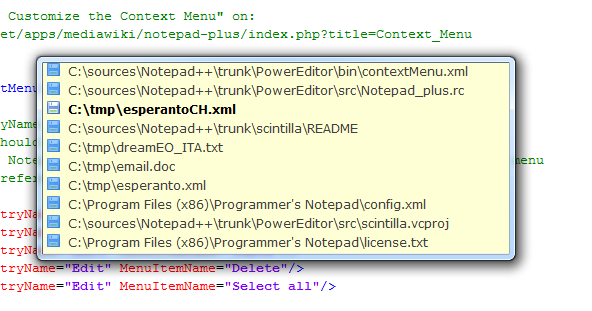
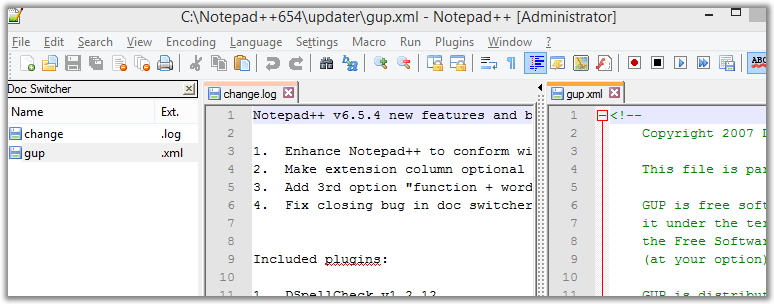

Texto original
Sugiere una traducción mejor
| Moverse entre varios documentos | Siguiente: Archivos recientes apilados |
Document Switcher es una pequeña lista de archivos que se muestran a continuación (para habilitarla, consulte Preferencias ) para organizar los documentos, lo que le permite seleccionar un documento abierto como el documento que desea. ser. La lista permanecerá visible hasta que suelte la tecla de edición que muestra la lista (tecla Ctrl si usa la tecla TAB o el botón derecho del mouse si usa la rueda de desplazamiento) o uno de los documentos ha sido seleccionado haciendo clic en él con el botón izquierdo del mouse. El documento resaltado se activará.

Tenga en cuenta que si asigna algo distinto de (Ctrl-) Shift-TAB para pasar documentos, el selector de documentos no funcionará correctamente al cambiar utilizando el teclado. En este caso, use el
mouse o desactive la opción (desde v5.4.3).
Hay otra herramienta para ayudarlo a navegar por los archivos abiertos: el cambiador vertical de archivos. Esta es una ventana acoplable donde se muestran los nombres de las pestañas de las dos vistas; vista principal primero. Su visualización y comando se muestran en el cuadro Parámetros -> Preferencias -> General -> Cambiador de documentos. . Puede ordenar los nombres de las pestañas, pero mezclará los nombres de las dos vistas. El orden predeterminado será reiniciar Notepad ++, a saber: vista principal en la parte superior, vista secundaria en la parte inferior y orden de las pestañas izquierdas a la derecha en cada vista.
Para llegar rápidamente al n- ésimo documento de las pestañas peladas, con n entre 1 y 9, simplemente use Ctrl-Pav Num rique n
Puede ocultar la columna de extensiones marcando Ocultar columna de extensiones en Preferencias → General